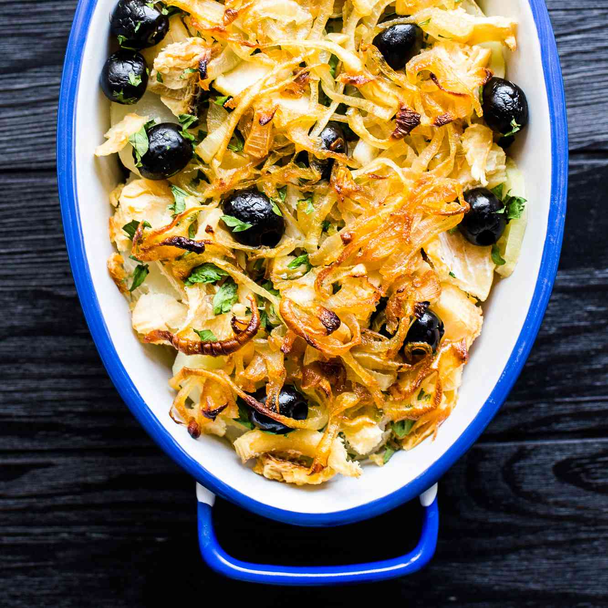

Bacalhau à Brás

Description
Salt cod with eggs, onions and matchstick potatoes.
One of the most iconic bacalhau dishes in a country that supposedly has 365 ways to cook it.
Ingredients
- 400g salt cod, soaked for 48 hours with several water changes
- 500g potatoes, peeled and cut into very thin matchsticks
- 2 large onions, thinly sliced
- 4 garlic cloves, minced
- 6 eggs, lightly beaten
- 4 tbsp olive oil
- handful of black olives
- fresh parsley, chopped
- salt and black pepper to taste
Steps
- After soaking, drain the cod and simmer in fresh water for about 10 minutes. Drain, remove skin and bones, and flake into small pieces. Set aside.
- Fry the matchstick potatoes in plenty of oil until golden and crisp. Drain on kitchen paper and set aside.
- In a large wide pan, heat the olive oil over medium heat. Add the onions and garlic and cook slowly for about 15 minutes until very soft and just beginning to colour.
- Add the flaked cod to the pan and stir to combine with the onions. Cook for 2 to 3 minutes.
- Add the crispy potatoes and toss everything together gently so the potatoes do not break up too much.
- Pour in the beaten eggs and stir continuously over low heat until the eggs are just set and creamy. Remove from heat while still slightly loose as they will continue to cook.
- Season with pepper. Salt carefully as the cod is already salty. Scatter over the olives and parsley and serve immediately.
The eggs should be soft and just set, never dry. This dish waits for no one - serve it straight from the pan.
Eat warm - straight from the oven or reheated. Reheating brings back the crispness of the pastry.
Casa